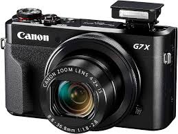
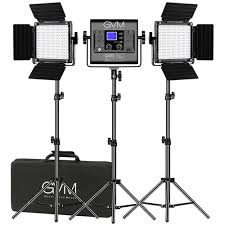
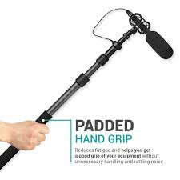
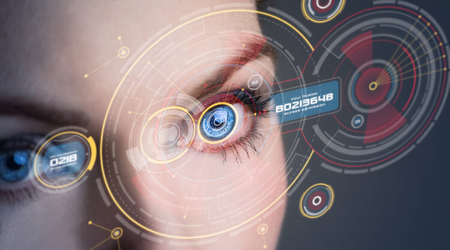

Welcome to Visi-Rec, where the future of media production meets personal technology!
Media Production
-
 Software
SoftwareAfter effects
- Industry Standard: The go-to software for motion graphics, visual effects, and compositing.
- Powerful and Versatile: Offers a vast array of tools and features for complex animations and effects.
- Extensive Plugin Support: A huge library of third-party plugins expands its capabilities.
- Deep Integration with Adobe Ecosystem: Seamless workflows with Premiere Pro, Photoshop, etc.
- Precise Control: Granular control over animation and effects through keyframes and expressions.
- Excellent Compositing Tools: Robust layering, masking, and keying features.
- Large and Active Community: Abundant online resources, tutorials, and support.
- Regular Updates and Improvements: Consistent updates with new features and performance enhancements.
Pros
Cons of Adobe After Effects
- Steep Learning Curve: Complex software with a non-intuitive interface for beginners.
- Resource Intensive: Demands a powerful computer for smooth performance.
- Subscription-Based Pricing: Available only through an Adobe Creative Cloud subscription.
- Can Be Slow and Unstable: Complex projects can lead to performance issues and crashes.
- Overkill for Simple Tasks: Too complex for basic video editing or simple animations.
- Interface Can Feel Cluttered: Many panels and options can be overwhelming.
- Reliance on External Software: Certain tasks may require other Adobe applications.
-
 Software
SoftwarePremiere pro
- Industry Standard: Widely used professional video editing software.
- Powerful Editing Tools: Offers a comprehensive set of tools for trimming, cutting, and manipulating video and audio.
- Seamless Adobe Integration: Works flawlessly with other Adobe Creative Cloud apps like After Effects, Photoshop, and Audition.
- Flexible Workflow: Supports a wide range of video formats and resolutions, with customizable workspaces.
- Advanced Color Correction: Includes Lumetri Color panel for professional-grade color grading.
- Robust Audio Editing: Integrates well with Audition for advanced audio mixing and mastering.
- Extensive Plugin Support: Compatible with numerous third-party plugins for added functionality and effects.
- Multi-Camera Editing: Streamlines the editing of footage from multiple cameras.
- Responsive Performance: Generally offers good performance, especially with optimized hardware.
- Large and Active Community: Plenty of online tutorials, support forums, and resources available.
Pros
Cons of Adobe Premiere Pro
- Steep Learning Curve: Can be challenging for beginners due to its extensive features and interface.
- Subscription-Based Pricing: Requires an Adobe Creative Cloud subscription, which can be costly.
- Resource Intensive: Demands a capable computer with sufficient RAM, processing power, and a good graphics card.
- Occasional Instability: Can sometimes be prone to crashes or bugs, especially with complex projects or outdated drivers.
- Interface Can Feel Crowded: The numerous panels and options might seem overwhelming to new users.
- Hardware Dependence: Performance is heavily reliant on the computer's hardware configuration.
- Project Compatibility Issues: Older project files might not always be perfectly compatible with newer versions.
SoftwareLightroom
Pros
- Excellent Photo Management and Organization
- Non-Destructive Editing
- Powerful Editing Tools
- Local Adjustments with AI-Powered Masking
- Presets and Profiles
- Seamless Integration with Adobe Ecosystem
- Mobile Apps for On-the-Go Editing
- Cloud Storage and Syncing
- Community Features (Discover Tab)
- Generative AI Features (e.g., Generative Remove, Lens Blur)
- Batch Processing Capabilities
- Excellent Support for RAW Files
Cons of Adobe Lightroom
- Subscription-Based Pricing Model
- Cloud Storage Limitations in Base Plan
- Potential Internet Dependence for Cloud Version
- Feature Differences Between Lightroom and Lightroom Classic
- Syncing Photos to Cloud Can Be Complex in Lightroom Classic
- Can Be Resource Intensive on Older Systems
- Steeper Learning Curve for Advanced Features
- Not Primarily Designed for Pixel-Level Manipulation (Photoshop is better)
-

Hardware
Cannon g7x
Pros
- Excellent Image Quality (1-inch sensor)
- Bright f/1.8-f/2.8 Zoom Lens (24-100mm equiv.)
- Compact and Portable Design
- Tilting Touchscreen LCD
- Good Color Rendition
- Built-in ND Filter
- In-Camera RAW Conversion
- Full HD Video Recording (1080p at 60fps)
- Wi-Fi with NFC Connectivity
Cons
- Sluggish Autofocus Performance
- Slow Burst Shooting with RAW Files
- Noticeable Recycle Time Between Shots
- Poor Battery Life
- Clunky Wi-Fi System and App
- Confusing Autofocus Modes
- Small Rear Control Dial
- Simplistic Auto ISO System
- No Hot Shoe for Accessories
- No Built-in Electronic Viewfinder (EVF) Option
- 
hardwareGVM 800D-RGB LED Light Panel
Pros
- Versatile RGB Capabilities: Offers a wide spectrum of colors, allowing for creative lighting effects and matching ambient light.
- Adjustable Color Temperature (Bi-Color):Typically ranges from 3200K to 5600K, providing flexibility for warm and cool lighting.
- High Brightness Output: Generally provides a significant amount of light, suitable for various shooting scenarios.
- Good Color Accuracy (CRI/TLCI):Often boasts high Color Rendering Index (CRI) and Television Lighting Consistency Index (TLCI) values, ensuring accurate color reproduction.
- Multiple Control Options:Usually includes onboard controls, smartphone app control, and DMX compatibility for more advanced setups.
- Special Lighting Effects: Many models offer built-in effects like lightning, police car, candle flicker, etc., adding creative possibilities.
- Durable Build Quality: GVM lights are often reported to have a solid and robust construction.
- Relatively Affordable: Compared to some professional-grade lighting brands, GVM often offers a good balance of features and price.
- Included Accessories: Often comes with useful accessories like a diffuser, barn doors, and a carrying bag.
- User-Friendly Interface: The controls and app are generally considered easy to navigate.
Cons
- Potential for Color Casts: While generally good, some users might experience slight color casts at extreme RGB settings.
- App Reliability: As with many app-controlled devices, the reliability and user-friendliness of the smartphone app can vary and may experience occasional issues.
- Fan Noise: Some models might have a noticeable fan noise, which could be a concern in quiet recording environments.
- Size and Weight: While portable, it's still a relatively large panel, which might not be ideal for ultra-compact setups.
- Power Adapter Size: The power adapter can sometimes be bulky.
- Light Distribution: Depending on the model and diffusion, the light distribution might not be as even as some higher-end panels.
- Long-Term Durability: While generally well-built, the long-term reliability compared to more established professional brands might be a question for some users.
- Software Updates: The frequency and quality of firmware or app updates can vary.
- Battery Power Limitations (if applicable): If battery-powered, the battery life might not be sufficient for extended shoots.
- 
Boom Poles with Microphones
Pros
- Optimal Microphone Placement: Allows for precise positioning of the microphone close to the sound source while remaining out of the camera frame.
- Improved Audio Quality: Captures cleaner and more direct sound, reducing unwanted background noise and reverberation compared to on-camera microphones.
- Versatility in Different Shooting Scenarios: Suitable for interviews, film production, documentaries, and other situations where high-quality dialogue or sound capture is crucial.
- Flexibility in Movement: A skilled boom operator can follow the action and keep the microphone in the best position as subjects move.
- Less Obtrusive than Lavaliere Microphones: Avoids the need for visible wires and clips on the subject's clothing.
- Can Capture Multiple Sound Sources: With careful operation, a boom mic can be used to pick up dialogue from multiple actors in a scene.
- Professional Results: Using a boom pole and microphone is a standard practice in professional audio recording for video and film.
- Variety of Microphone Types: Compatible with various shotgun and other directional microphones designed for focused sound capture.
Cons
- Requires a Dedicated Operator: Often necessitates a separate person to operate the boom pole effectively, adding to crew size and cost.
- Risk of Boom Shadowing: If not handled carefully, the boom pole or microphone can cast shadows in the shot.
- Potential for Handling Noise:Inexperienced operators can introduce unwanted noise through movements of the pole or cable.
- Physical Strain on the Operator: Holding and maneuvering a boom pole for extended periods can be physically demanding.
- Learning Curve for Operation: Mastering proper booming techniques takes practice and skill.
- Equipment Cost: Boom poles and professional-grade microphones can be a significant investment.
- Setup Time: Setting up and positioning the boom pole and microphone can take more time than using simpler audio solutions.
- Limited Reach in Tight Spaces: Maneuvering a long boom pole in confined environments can be challenging.
- Wind Noise Issues: Outdoor recording often requires additional wind protection (windscreens, blimps) which can add bulk and cost.
- 
- You can capture videos in first person with these lenses. It will have 4K quality. + AI-enhanced quality Records in 60fps Nanotechnology Visual hologram description: You're looking at a test paper and have different math equations. The lenses will copy the question and create a hologram that you can see and show you the answers step by step. Using AI You can create workspaces to create blueprints for a house. You will see a visual hologram of the house in its true size. Video call will AI scan; you create a scan of your figure; when you call someone, you can see a life-size model of them like they're in front of you. You can listen to music and hear things through VisiRec Pro without being audible thanks to the non-detectable earpiece that comes with VsiRec Pro. Visi Rec Pro will have all the things included in the original version but more detailed and advanced. VisiRec Pro will have music haptics It will combine the music with the haptic sound of choice. VR!
Digital Eye Capture